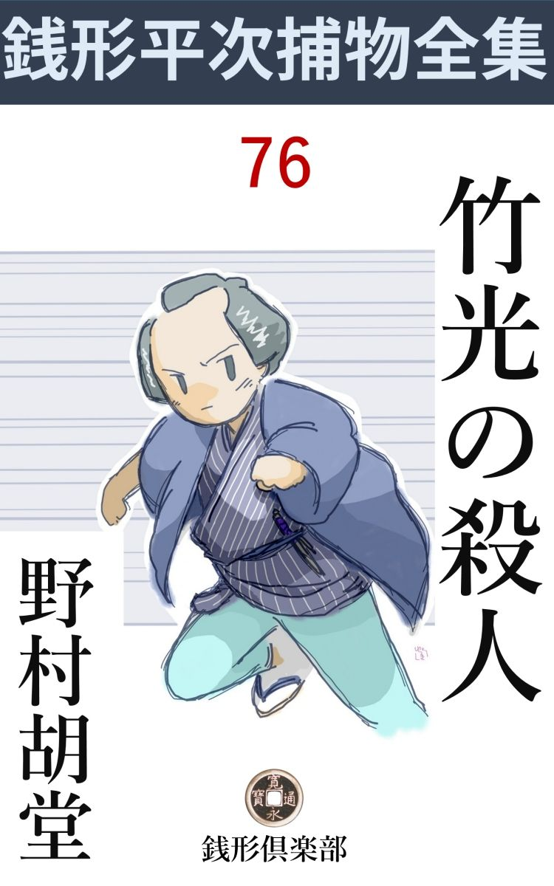
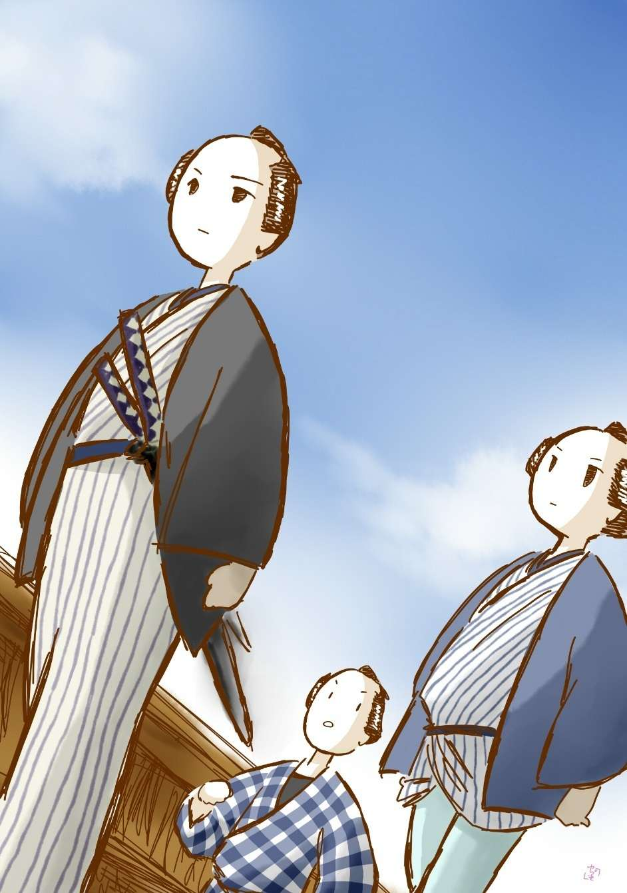

| 竹光の殺人: 銭形平次捕物全集第76話 (銭形倶楽部) | |
| 野村胡堂 | |
| ZENIGATA CLUB (2018) | |

一
「平次、狸穴 まで行って見ないか、竹光 で武家が一人殺されたんだが------」
与力笹野新三郎は、ちょうど八丁堀組屋敷に来合せた、銭形平次を誘いました。
「旦那が御出役で？」
「そうだよ。浪人者には違いないが、土地では評判の良い人物だ。放 っても置けまい」
八丁堀の与力が出役するのは、余程の大捕物で、いずれは殺された武家の旧藩 関係に、厄介なことでもあるのでしょう。
「お供いたします。ちょうど、八五郎も参って居りますから」
「そうしてくれると都合が宜い」
笹野新三郎は、銭形平次を信頼し切っております。土地の御用聞は、うるさい縄張のことを言い出しそうですが、与力のお声掛りで行く分には、文句の言いようはありません。
桜は八重、日和も陽気も、申分のない春でした。竹光で武家が殺されたという、煽情的 な事件がなくとも、若くてハチ切れそうな平次は、江戸中を一廻りしたいような心持になって居たのです。
「やっとう の方はいけたんでしょうね、その浪人者は？」
平次は道々も竹光の事が気になってなりません。
「微塵流 の遣 い手で、さる大藩の指南番までした人物だそうだ」
「それが、竹 箆 で殺 られたんですか」
「変って居るだろう」
そんな事を言いながら、三人は芝山内から麻布 狸 穴 へ、ゆらゆらゆらぐ、街の陽 炎 を泳ぐように辿って居たのです。

狸穴に着いたのは昼少し過ぎ、この辺は山の手の盛り場で商い家も多く、手軽な見世物や、茶屋、楊弓場などのあった時代ですが、一歩裏通りに入ると、藁 葺 のしもた家が軒を並べ、安御家人や、浪人暮しなどの人が、ささやかな畑を拵えて、胡瓜や南瓜を育てていると言った、一種変った風物が特色でもあったのです。
「お待ち申しておりました、旦那」
狸穴 のとある家、生垣の前に、土地の岡っ引が待っておりました。狸穴に縁を持たせて鼓の源吉というポンポンした四十男。
「鼓の親分、私も目学問をさして貰いますよ」
平次はへり下って肩の手拭を取りました。
「宜いとも、銭形の兄哥 が来てくれると、俺も心強いというものだ」
あっさりした口はききますが、何か腹の底に蟠 りがないではありません。
「死骸は？」
と笹野新三郎。どこからともなく散り残る花 弁 が飛んで来て、陰惨な空気などは感じられませんが、建物に添って右に曲ると、風の吹廻しか、線香の匂いがプーンと来て、さすがに職業的な緊張を覚えさせます。
「今朝死骸を見付けたのは、此処でございました」
源吉は狭い庭の沓 脱 の上を指しました。一抱えほどの自然石の上は、春の陽に乾いて血潮がベットリ、もう玉 蟲 色 に光っているのも不気味です。
「誰が見付けたんだ」
「私で------」
いつの間にやら、新三郎の後ろ、平次の横手に立っていたのは、二十七八の小気のきいた渡り中間 風の男です。
「お前は？」
新三郎の眼は少し厳 しく動いて、この男の全部を一瞬に読もうとしました。
「奉公人でございます。藤助と申しまして、へエ------」
「------」
「二十七でございます。生れは下谷で、へエ------」
訊きもしない事まで、よくペラペラと饒舌 る男です。
「下谷は何処だ」
平次はこの男に好奇心を持つ様子で、横から口を出しました。
「二長町の五兵衛店 で生れました。町内で訊いて下されば、まだ知ってる者がありましょう」
藤助は一向物にこだわりません。
二
家の中は思いの外小綺麗ですが、浪人生活の不自由さが畳の古さにも、調度の貧しさにもわかります。それにしては、渡り中間らしい男を一人給料を出して下男に使っていたのが腑 に落ちません。
死骸は検屍 前ですが、士分の扱いで、庭に転がしても置けなかったのでしょう。座敷の中へ上げて、床 の上に寝かし、形ばかりですが、一と通りのことはしてあります。死骸の側に身も世もあらぬ姿で泣いているのは、十八九の娘、------これは、殺された主人福島嘉平太の一粒種で、お頼 という美しいの。その側から、慰 め兼ねておろおろして居るのは、『小父さん』と言われる、故人と昵 懇 の浪人者、跡部満十郎という四十男です。
娘お頼の悲嘆は見る目も気の毒でした。天にも地にも、たった一人の肉身は、青竹を削って、鍔 と柄 だけを取付けた、竹光で背中から縫われ、獣のように死んで居るのです。
「旦那、気の毒ですが、傷口を洗って見なきゃなりません」
平次は、笹野新三郎に囁やきました。
「そうするが宜い」
新三郎が目で指図すると、ガラッ八と平次は、さっそく盥 を持出しました。生 温 い湯が一杯、源吉の手を借りて、丁寧に死骸の傷口を洗い始めたのです。
殺された福島嘉平太はまだ五十そこそこ、武芸で鍛 えた身体は、鉄で鋳 抜 いたように見事なものです。傷は左肩の下五寸ほどのところ、竹光を着物の上から突っ立てて、肉が無慙にはぜておりますが、不思議なことに、竹光を突っ立てた傷の周囲に、二カ所ほど、別の軽い傷があって、それは、洗って見ると、血がにじんだ様子もありません。
「これは不思議だ、着物の外から捜 って突っ立てたのかい」
源吉は酢っぱい顔をしました。竹光で外から捜って、三度目に致命的な突きをくれるというのは、生 身 の人間を相手には出来ないことです。
「その二カ所の浅い傷は、血も何にも出ちゃいない。死んでから付けたのさ」
平次は註 を入れてやりました。
「死んでから竹光を突立てたのかい」
と、源吉。
「鋸引 きにする積りだったかも知れない。余っ程の怨 があったんだね」
「主人は微塵 流の達人だったというから、まさか竹光で突かれて死ぬようなことはあるまい」
それは笹野新三郎の当然の疑いでした。
「刀か槍で刺して、その傷口へ竹光を突っ立てたのじゃございませんか、旦那」
と平次。
「成程」
「この竹光は誰の物か、解っているだろうな」
平次は下男の藤助を顧みました。妙に退 っ引 させぬ厳しい調子です。
「申上げて宜しゅうございましょうか、お嬢様」
藤助は、おろおろしました。
「あれ、お前、滅多なことを」
お頼 は涙の顔を挙げて、出来ることなら、藤助の口を封じたい様子です。すっかり泣き濡れておりますが、眼鼻立の可愛らしさは非凡で、この娘一人のためにでも、幾人かの人が命を落しても不思議はないでしょう。
「隠しちゃいけねえ。解っているものならはっきり言うがいい。後で知れると、却って物事が面倒になる」
平次は、お頼と藤助の二人へかけて言いました。
「申しますよ。親分。横町に住んでいる、星野門弥様が、こんな刀を差していらっしゃいました。やはり御浪人で、へエ」
そう言いながら、藤助は何処から捜したか、少し禿チョロの鞘 を持って来ます。
「何だ、鞘も捨てて行ったのか。念入りなことだな」
そう言いながら、平次の眼は、側に待機している八五郎の顔をチラリと見ました。
「------」
心得て飛んで行くガラッ八。たったこれだけの合図で、ガラッ八は横町の星野門弥とか言う浪人のところへ行って、次の命令が来るまで喰い下がっていることでしょう。
三
「お嬢さんは、昨夜これほどの騒ぎに気が付かなかったので？」
平次は美しい娘を振り返りました。
「赤羽橋の小父さんのところに泊っておりました。子供達に引留められて------」
「赤羽橋の小父さん？」
「私のところだよ」
跡部満十郎はそう言いながら続けます。
「私の娘達と一緒に、飛んだ夜更しをして、子刻 近くなって寝たそうだが------」
「すると、此家 には、殺されなすった主人が、お前と二人だけでいたわけだな」
平次はもういちど藤助に戻りました。
「へエ------、二人っ切りには違いありませんが、朝まで何にも気が付きません。あっし は友達仲間でも冷かしの種になっているほどの寝坊で」
「朝起きて見ると、------」
と源吉。
「雨戸を開けると、沓 脱 の上に、御主人が死んでいなさるじゃありませんか」
藤助はゴクリと固唾 を呑みます。その時------、
「親分、大変ですよ」
ガラッ八が飛んで来ました。
「星野とか言う浪人者はどうした」
平次は何か重大なものを、ガラッ八の顔から読んだ様子です。
「二三日大熱で、身動きも出来ない病人ですよ」
「病人？」
「町内の本道------本田良全 さんが来ているから嘘や仮病 じゃありません。二年前から、ほんものの病気で------」
ほんものの病気と言うのが可笑しかったか、平次と笹野新三郎は顔を見合せて苦 がりとしました。
「それは飛んだ命拾いだ。------病気でなきゃ、どんな疑いを受けたか知れない」
と平次。
「尤も妹が一人居ますよ」
「幾つだ」
「二十一二で、滅法良い新造で------」
「馬鹿野郎ッ」
ガラッ八はとうとう馬鹿野郎を喰ってしまいました。
「親分さん、------万一ですよ。万一、それが仮病だったら、大変なことになりますよ」
藤助が横から口を出しました。
「何が大変なんだ。言って見るが宜い」
と笹野新三郎。
「あの方と、此処の御主人とは元同じ藩中で、------あの方は、御主人を仇 のように思い込んでいる様子でございますが------」
藤助はよくよく口数の多い男でした。
「仇？ ------それはどう言うわけだ」
「詳しいことは解りませんが、余っ程怨があるようで------」
笹野新三郎はその答が不満足らしく、振り返って、平次の顔をチラリと見ました。が、平次はそんな話には大した興味も感じないらしく、狭い------と言っても、茄 子 の二うね位は作れそうな小さい畑の先、ちょうど隣の板塀の前に植えた、厚いが疎 らな生垣のあたりを見て居りました。
「旦那、変じゃございませんか」
「何が？」
笹野新三郎もさすがに平次の疑いの原因には気が付きません。
「今朝、その辺を歩きゃしなかったかね、鼓の親分」
平次は狭い畑のあたりを指しながら、鼓の源吉に訊ねました。
「いや、誰も」
源吉はすっかり平次にリードされて、自分の意見を樹 てる工夫もない様子です。
「きのうの朝雨が降った筈だ。------畑の端っこにある、生垣のところまで行った足跡がたくさんあるが、------おやおや、庭 下 駄 と跣足 と滅茶滅茶に入り乱れている」
平次は庭に降りると、足跡を辿 って、生垣の側まで行きました。
「誰だか解るか、平次」
と縁側から笹野新三郎。
「庭下駄は殺された主人ですよ。------まだ物の芽も何にもない畑へ入らないように、用心して歩いているのは、この畑を作った人でなきゃなりません」
昨夜のような闇の濃い晩にも、空っぽの畑を踏まないようにして通るのは、畑に対して特別の愛情を持ったものでなければならなかったでしょう。
「跣足 のは？」
と新三郎。
「ここへ来いッ、藤助」
平次はそれに応えず、いきなり下男の藤助を呼付けると、その手を取ってグイグイと引きました。
「親分、何をなさるんで？」
「跣足になれ」
「------」
「ならないか、野郎ッ」
「へ------」
「この足跡の側へ、手前 の新しい足跡を付けるんだ。------馬鹿野郎、右だ、左じゃねえ」
平次は峻烈 でした。藤助の襟髪を摑 んで、古い足跡に並べて付けさした足跡は、大きさも形も、何もかも符節を合せるように同じものだったのです。
四
「あッ、この生垣 の濡 れているのは、どうしたわけだ」
鼓の源吉は気が付きました。
「濡れているのは其処だけだ。------懐紙でその辺の木の葉を拭いて見るが宜い」
平次はそれ以上の事に気が付いている様子です。源吉は大急ぎで------濡れ残る生垣が、咄嗟 の間に乾くのを恐れでもするように、一握りの懐紙を生垣の中に突込み、滅茶滅茶に濡れた木の葉の間をかき廻すと、
「あッ」
紙はあるかなきかの、薄 桃 色 に染められるではありませんか。
「主人は其処で殺されたのさ。跣足男がその死骸を引っ担いで来た。------それは間違いのないことだ。跣足の足跡が、------往きは浅くて帰りが深い。------死骸を引っ担いだためだ」
何と言う慧眼 、------が、こんな事は平次に取っては朝飯前のことでしょう。
「何だって、あんなところへ連れて行って殺したんだ」
と笹野新三郎。
「そいつが判れば------旦那」
平次は考え込んでしまいました。
ともすれば逃出しそうにする藤助を、ガラッ八の馬鹿力に預けて、平次と源吉と、それから笹野新三郎は、家の四方をグルリと一廻りしました。
何の変ったこともありません。が、たった一つ、藁 屋根の頂点に、どこから飛んで来たか、虫喰いの稽古矢が一本、天 矢 が落ちてきた恰好に、箆 深 く突っ立って居るだけ。
平次は併 しそれに見向きもせず、門から出ると、いきなり生垣の向う、板 塀 繞 らした隣の家へやって行きました。
「御免下さい」
「ど------れ」
響の音に応ずるように、物々しい返事といっしょに戸口の障子を開けたのは、四十五六とも見える青髯の武張った浪人、門札を見ると、岩根半蔵と唐 様 の四角な文字で書いてあるのも人柄が忍ばれます。
「お隣に、飛んだ騒ぎがありまして、お邪魔しますが------」
「福島殿に間違いがあったそうだな」
岩根半蔵という隣人は何も彼 も心得ている様子です。
「お気の毒なことでございました。ところで、何かお気付きのことはございませんか。昨夜から今朝へかけて、物音とか、人声とか------」
「気が付かんな。------尤も俺は名題の寝坊だし、奉公人というものが居ないから」
岩根半蔵はニヤニヤします。覗くともなく見ると、成程たった二室の浅 間 な住居で、雇人などを置く場所があろうとも思われません。
「平常 、お隣とのお附合はございませんか」
「ないなア」
「お隣同士で、顔が合えば口をきくとか、挨拶をするとか------」
「俺は------死んだ人の事を悪く言っちゃ済まんが、あの、福島嘉平太というのが大嫌いでな。高 慢 で頑固 で、けち で」
「------」
死んだ人の事を言っちゃ済まぬと言いながら、これまた歯に衣 着せぬ物の言いようです。
「藤助と言うのを御存じで？」
「よく知っているが、あれは人間の屑 だ」
「へエ------」
「呑む、打つ、買うの三道楽だ。------福島という人、弱い尻でもなきゃ、あんなイヤな奴を使っている筈はない」
言うことに一々棘 があります。
「お隣の御主人とは以前から御存じで？」
「左様、懇意ではないが知ってはいる」
これ以上は何を訊いても解りそうはありません。
五
竹光の持主、星野門弥の家はみじめ でした。主人の門弥はまだ二十五六の青年武士ですが、さんざんの貧苦の上、二三年この方の重病で、袷の裏まで剝 して売る有様、妹のお雪は二十一二のすぐれた容貌 ですが、これも、尾羽打枯して見る影もありません。
「御病人があるそうで、お気の毒なことですが、------」
平次もこれ以上のことは言い兼ねました。九尺二間の豚小屋にも劣る陋 屋 に、病人の兄と二人住む妹の美しさ。
「お恥 しゅうございます。兄はこの通りの病気で、この二三日は枕も上がらず------うつらうつらと高熱にうなされて、申すことも判然 いたしません」
引っ詰め髪をかき上げて、お雪は泣き濡れて居りますが、貧苦にしいたげられながらも、品のよさは蔽 うべくもありません。
「少し聴きたいことがあるが、------ちょいと其処まで、お顔を」
「ハイ」
平次の後に跟 いて、------後に残る兄の容態を気にしながらも五六間路地の外へ出ました。
「福島嘉平太を御存じで？」
「存じて居るどころではございません。三年前まで、同じ家中でございました」
「何？ 同藩？」
「さようでございます」
「岩根半蔵という人は？」
「あの方も同藩でございます」
「それはそれは」
三人とも同藩と聴いて、平次も開いた口が塞 がりません。それを気 振 にも現さなかった岩根半蔵はどう言う考えだったのでしょう。
「三年前まで、西 国 のさる大藩に仕え、福島様は勘定方、私の兄は御金蔵の番人をいたしておりました。------ある晩、風雨にまぎれて賊が入り、御金蔵から、新鋳未刻印 の小判三千両と御家の重宝二品三品盗み出して逃げうせ、そのため、盗賊詮議という名義で、福島様も私の兄も永の暇 となりました」
「------」
「兄は福島様を疑い、福島様は兄を疑い、二人は力をあわせて盗賊を詮議する気もなく、たがいに跡をつけ跡をつけられて、当江戸表へ参り、御当所狸 穴 に住みついて、お互いに見張っております。御金蔵の鍵は三つ、一つは殿御手筥 に、一つは福島様手許に、一つは兄が持っておりましたので、お互いに疑い合い、見張り合うのも無理はなかったのでございます」
お雪の話は奇っ怪ですが、そう説明されると、仇同士がおたがいに離れることもならず、互いに疑い合い、互いに憎み合い、互いに見張り合って、三年越し暮した事情も呑込めないことはありません。
「福島様はさいわい御裕福で、三年経ってもお困りの様子もございませんが、私どもは御覧の通りの有様、その上兄の病気で、何もかも売りつくし、恥かしながら、刀の中味まで、竹 箆 に代るような浅ましいこの頃でございました」
平次は慰め兼ねました。
「ところで、岩根半蔵というのは？」
「福島様の御友人で、そのころ国許を退転した方でございます」
これ以上のことはお雪も知りません。平次は、とにもかくにも、宥 め励まして引揚げる外はなかったのです。
六
福島家では笹野新三郎の許しを受けて、葬 いの支度に取りかかりました。
美しい娘のお頼 は、あまりの事に泣いてばかりいる有様で、跡 部 満十郎が何もかも一人で引受けて仕事を運ぶ外はありません。
「跡部さん、忙しいところをお気の毒ですが」
「いや、一向構わないが------」
跡部満十郎は平次の望むがままに、手をあけて物蔭へ来てくれました。
「変なことを伺いますが、福島家は裕福でしょうか」
「不思議なことがあるものだよ、私も福島家には三年五年食いつなぐ金があるものと思って居たが、主人が死んで見ると本当に百の貯 えもないことが判った」
「へエ------」
「費用万端、私が立換えてやって居るが、こんなに驚いたことはないよ」
跡部満十郎は本当におどろいている様子です。
「旦那とここの御主人とはどんな係り合いで？」
「何でもないよ、ただ同藩だったし、稽古所で私の娘どもも、お頼殿と別 懇 にしていたし、それに私と福島殿とは碁敵 だったからな。------性が合うと言うものか、他人のような気がしない、お頼殿さえその気なら、この後は私の家へ引取って、娘どもの姉分になって貰おうと思って居るよ」
「旦那の御配偶 は？」
「ないよ」
跡部満十郎の顔は一寸 翳 りました。四十前後と言っても、気の若そうな、正直一途らしい人物です。
それから、お頼にもういちど逢いましたが、ただ泣くばかりで何の取留めもありません。尤も、成熟し切った十九の肉体は、申分のない美しさと優しさに恵まれて、少し気性の弱々しいのさえ、却って魅力になると言った肌合の娘でした。
それから、最後に、もういちど藤助。
「この野郎は何べん逃げ出そうとしたかわかりませんよ、------主殺しは此奴じゃありませんか、親分」
見張りのガラッ八は、すっかりむくれて居ります。
「今に磔柱 を背負わされる野郎だ、好きなように暴れさせるが宜い」
藤助も、平次の言葉には魂を冷しました。
「親分、そいつは情けねえ。あっし は正直者で、主を殺す人間か、人間でないか、誰にでも訊いて下さい」
「訊かなくたっていい、手前 の荷物を見せさえすりゃ」
「お安い御用だ、親分、------その押入の中にある柳行李 と風呂敷があっし の世帯だ。はばかりながら錦の小袖も、絹の褌 もあるわけじゃねえ」
「よしよし、その風呂敷や行李は見たかねえ、俺はこの部屋に用事があるんだ」
手頃の薪 を一本持って来た平次は、部屋の天井板を一枚一枚叩いておりましたが、やがて押入へもぐり込むと、新しく貼った壁張の紙を引っ剝 し、壁を少し叩き落して、十枚ばかりの小判を持って、埃 だらけになって出て来ました。
「見ろ、藤助、御主人は百も持っちゃ居ねえのに、奉公人の手前は十両という大金を持って居るじゃないか」
「親分、そいつは給金を貯めたんだ、やましい金じゃねえ」
「年に四両の給金を、そっくり二年半貯めたというのかい」
「少しは手なぐさみもしますよ、親分」
「まア、宜い。とにかく、昨夜主人の殺されたことと、此家 には小粒一つないことだけは確かなんだ。奉公人が十両の大金を持っていて、不思議か不思議でないか。お白 洲 で言い開きをするがいい」
「親分、そいつは無理だ。ゆうべ主人を殺して盗った金が、そんな埃だらけな紙の中に貼り込んである筈はねえ、------そいつは糊 がよく乾いている筈だ」
藤助は思いの外筋の立ったことを言いますが、平次は取り合う色もなく、
「八、その野郎を番所へ引っ立てて行くが宜い、逃しちゃならねえよ。それから、後で少し働いて貰いたいことがある、屋根の上の矢を抜いて貰いてえのだ、------小判は俺が預かって行くよ、藤助」
平次は残るところなく手配して、笹野新三郎と一緒に引揚げました。
七
「旦那、大変なことになりました」
「何だ、平次、大層脅 かすじゃないか」
翌る日の朝、銭形平次を迎えた笹野新三郎は、好奇心と職業意識でハチ切れそうでした。
「何から申しましょう、まず、あの下男の藤助の匿 して居た小判十枚は、みんな真物の未刻印 小判に、素人 が偽物の刻印をタガネで打った物でございますよ」
「それは大変だ」
未刻印小判に、偽刻印を打つというのは、偽金を造ると同じことで、これは磔 刑 ものです。
「それから、もう一つ、あの藤助と言う野郎は、下谷二長町の鋳 掛 屋 の伜ですよ」
「何？」
「こいつは近頃の大捕物になりますが、組子の用意をお願いいたします」
「何人位？」
「相手の腕が判りませんが、まア、十人もあれば」
「そんな事で大丈夫か」
「あんまりお膝元を騒がせるものでもありません」
用意は疾風 迅雷 でした。銭形平次が捕頭 で、手下の組子が十人、わざと真昼を選んで、八方から一挙に岩根半蔵の浪宅を囲んだのは、それから一刻ばかり後のことです。
「御用ッ」
「岩根半蔵、神妙にせいッ」
一隊は表の入口から、一隊はお勝手から、一挙に疾風の如く飛込んだのです。
「えッ、何を馬鹿なッ、御用呼ばわりをされる覚えはないッ」
起ち上った岩根半蔵。
「御用ッ」
正面から飛付いた一人は、半分食いかけの、昼飯の茶碗を目潰 に叩き付けられてのけ反りました。つづく一人は、額で番茶の土 瓶 を打ち割り、うしろの一人は、一本背負いでモンドリ打たせられます。
「其方どもに縛られる俺ではない、寄るな、寄るなッ」
早くも引抜いた一刀、バラリと一文字に払うと、つづく二三人、薄 傷 を負って将棋 倒 しに------。
「御用ッ」
「神妙にせいッ」
あとは僅かに二人三人、それを冷たい笑 にあしらって、岩根半蔵ズイと外へ出ます。広いところへ出さえすれば働きは自由自在、こんな捕物陣くらいは、一瞬にして踏み潰せると思ったのでしょう。
「岩根半蔵、逃げる気か」
正面へ立塞 ったのは銭形平次でした。生れながらの精気五体に充ち充ちて、非凡の使い手岩根半蔵の前に莞 爾 としておくれる色もありません。
「平次か、------無駄だ、------俺は其方などの手に了 える人間ではない」
りゅう と白刃が真昼の陽を剪 って、銭形平次を鼻であしらいます。
「御金蔵破り、福島嘉平太殺し、観念せい」
平次も一歩も退 きません。
「何？ 御金蔵破りは判って居るが、福島嘉平太殺しは俺の知ったことではないぞ」
「神妙にせいッ」
「磔刑 も梟首 も覚悟の上だが、覚えのない罪までは背負わぬぞ。------とにかく、今はまだ縛られたくない。あばよ」
パッと飛ぶのを、平次の十手は後ろから無手 とその肩を押えました。
「えッ、命知らず奴ッ」
ふり返った一文字の切り払い、平次はサッと飛退くと、十手は左手に、右手は早くも懐をさぐって得意の投銭。
「汝 れッ」
一つは振り冠 った拳 を叩かれ、一つは眼の下を、一つは鼻の上をしたたかにやられて、岩根半蔵さすがにたじろぎました。
「御用ッ」
つづいて飛付く十手、左手業ながら、半蔵の一刀を絡 み取って、痛烈に体当りを一つ。
「あッ」
縄はもう、その手首に掛って居りました。
八
「親分、何を考えて居るんで？」
ガラッ八の八五郎は、慰め顔にやって来ました。藤助と岩根半蔵が縛られてから五日、平次はこれ程の手柄にも慢 ずるどころか、神田の家に引籠って、人に顔も見せなかったのです。
「大縮尻 だよ、八。福島嘉平太を殺したのは、どうも岩根半蔵じゃねえ」
「それは又どう言うわけで？ 親分」
ガラッ八は膝を進ませました。
「なるほど、三千両の小判は、岩根半蔵の家から出て来た。藤助の拵えた偽刻印まで捺してある、------金蔵に入って小判三千両と、宝物を盗んだのは、岩根半蔵に相違あるまい。福島嘉平太はそれを嗅ぎ付けて跡を追い、星野門弥は嘉平太を疑 ってそれを追った」
「------」
「狸穴 に落合って暮すうち、福島と岩根は折合をつけた。藤助という鋳 掛 の心得のある下男にタガネを拵えさせ、未刻印小判にタガネを入れて、三千両を半分ずつわけることにした、------それは岩根半蔵も白状している」
「------」
「所が、岩根は福島嘉平太に半分やるのが惜しくなった。藤助を悪 企 みに引入れて藤助に五十両か百両の手間をやって、福島嘉平太を殺し、三千両一人占 にする事を考えた」
「------」
「稽古矢に火口と硫黄 をつけて飛ばし、屋根の上に射込んで、福島嘉平太をおびき出し、屋根の上の怪し火を見 窮 めるところを生垣と板塀越しに、槍で突き殺し、その死骸へ、星野門弥の刀を盗んで来て、突ったてることまで考えた。------これは多分半蔵の悪 知 恵 だろう。九尺二間の星野門弥の家から、大病人の目を盗んで刀を持出すことは何でもない、門弥兄妹と嘉平太の睨み合いは町内で知らぬ者もない」
「------」
これだけの事は、藤助と岩根半蔵の白状で、ガラッ八もよく知って居ることです。福島嘉平太と岩根半蔵は、甲乙のない使い手で、正面から切り結んでは、何方が勝つとも判らないので、板塀の隙間から、生垣越しに突くことを考えたのは、まことに底の知れない悪知恵だったのです。
「合図の矢は屋根に落ちた。火口 と硫黄はポッポと燃えている、------あの晩藤助は、主人の福島嘉平太をおびき出し、生垣にピッタリ身体をつけるようにして、屋根の上の怪し火を見せた、後ろから槍の穂先が出て、一寸一分の狂いもなく、福島嘉平太の心の臓をつらぬいた。------藤助はかねての打合せの通り死骸を引っかついで沓 脱 の上におき、水を一手桶持出して、生垣を洗った、------そっと横町の星野門弥のところへ忍び、大病人の枕元から刀を盗んで来た。------それが竹光と後で気がついた時は追付かない。死骸の着物の上から三度も四度も竹光を通して、ようやく槍で突いた創口を捜 り当てた」
「------」
「ところが八、困ったことにはあの晩、岩根半蔵は自分の家に居たのだよ」
平次の悩みはそれだったのです。
「それはあっし も聴きましたよ。でも、半蔵が嘘を言ってるのかも知れないじゃありませんか」
と、ガラッ八。
「嘘じゃない、多勢証人がある。夜中に脱出して来られる筈はない」
「でも」
「半蔵は磔刑 も覚悟して居るんだぜ。一人や二人殺したのを隠す筈はない。これは矢張り下手人は外にあるに違いないよ」
「------」
「第一岩根半蔵が自分でやったのなら、血だらけな槍を自分の家の床下に投り込んでおく筈はない」
「------」
「藤助と半蔵の相談を盗み聴きした奴の仕業だ、------どうかしたら、福島嘉平太を殺すのを、半蔵がいやになったと見 抜 いた奴の仕業かも知れない。いずれにしても、福島嘉平太に深い怨のある奴の仕業だ。ただあの晩、岩根半蔵が家に居たのを知らなかったのだ。------」
平次は黙りこくってしまいました。いやな事を思い出した様子です。
「親分、あの娘じゃありませんよ、------あの娘なら、殺したら、殺したと名乗って出る筈じゃありませんか、金蔵破りとそれに荷 担 した奴が知れたんですもの」
ガラッ八はやっきとなりました。
「誰の事を言ってるんだ」
と平次。
「親分は、門弥の妹のお雪を疑って居るんでしょう」
「いや、違う------こんな事はない筈だが、人間の心は恐ろしい。あの火口 と硫黄 をつけた稽古矢を、飯倉か巴 町 の弓師に見せて来るがいい、------誰が誂 えた矢か解るだろう。それから、近頃、どうしたことか、お頼 を跡部満十郎が引取っているそうだから、それも捜るんだ------」
「え、親分、それはまたどうして------」
「なあに、女房がいなくなって娘達ばかりだから、跡部満十郎がお頼をひきとったのだろう。それに頼みがもう一つ」
平次は何か言いかけましたが、
「そいつは俺が当って見よう。頼むぜ」
一人のみ込んで飛出しました。
九
人間の心の恐ろしさを、この時ほど平次も覚 らされたことはありません。
矢を誂えたのは意外にも跡部満十郎、そして近ごろ跡部満十郎に引取られたお頼は、満十郎の執 拗 な恋に驚いて、ツイ一昨日、芝の遠い知合をたどって逃げて行ったことまで明かになったのです。
藤助と岩根半蔵の密談を聴く機会のあるのも、後で思い合せると跡部満十郎で、半蔵が福島嘉平太殺しを思い止まって三千両を山分けにする気になりつつあることを見抜いたのも跡部満十郎でした。
跡部満十郎にしては、事件の当夜、夜中に飛出して狸穴 へ行き、岩根半蔵の家から槍を持出して、怪し火の矢を飛ばし、藤助に合図した上、手筈の通りに運ぶのは何でもなかったのです。
それを岩根半蔵の仕業と思い込んで、後始末をした藤助にも、何の不思議もありません。
× ×
跡部満十郎はその日の内に縛られました。
「どうして、あの野郎がそんな馬鹿なことをする気になったろう」
ガラッ八の驚きの前に、
「人の心の恐ろしさだよ」
平次はそう言うより外になかったのです。
四十男の跡部満十郎が、お頼 を自分のところへ引取るために気違いじみた情熱に打ち負 されて、人間の思い付く一番タチの悪い罪を犯したのでした。
「親を殺して娘を手に入れる------なんて事をしやがるんだろう」
とガラッ八。
「だから罰 が当ったのさ。それに比べると娘を手に入れたさに、親に仕送りをする八五郎の方がどんなに可愛らしいか解らない」
「親分」
「心配するな、煮売屋のお勘っ子を張って、毎日煮 豆 を買ってやる事までチャンと見透しだよ」
「親分、そんな馬鹿なッ」
「その方がよほど人間らしくていいよ、ハッ、ハッ、ハッ」
平次はようやく笑顔を見せました。
（編注）
作品中には、身体の障害や人権にかかわる、差別的な語句や表現が見られますが、本書が成立した当時の時代背景等が現代とは異なる古典的な文学作品でもあり、著者が故人でもありますので、底本のままとしました。ご理解、ご諒承のほどをお願い申し上げます。
著者---野村胡堂
挿絵---萩 柚月 © 2017
初出---「オール讀物」昭和十三年五号 文藝春秋社
底本---「錢形平次捕物全集」第四巻 河出書房 昭和三十一年六月三十日初版
編集・発行 銭形倶楽部